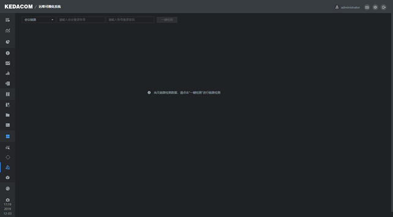
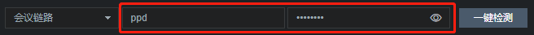
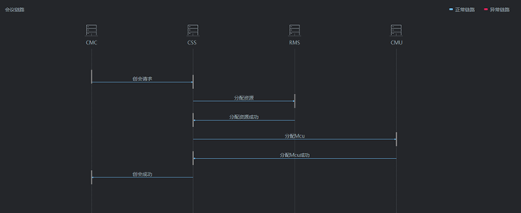
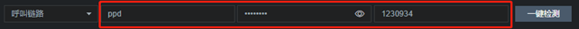
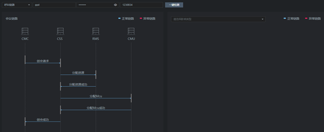

支持一键检测系统状态的自定义调用链状态，有会议链路（检测会议功能）和呼叫链路。

会议链路
1. 在诊断功能>链路检测页面，选择会议链路，输入创会登录账号和登录密码，点击【一键检测】；

2. 检测成功后，能看到每一层业务下发的信息，鼠标移至对应的业务，可查看详细信息。

呼叫链路
1. 在诊断功能>链路检测页面，选择呼叫链路，输入创会登录账号和登录密码，以及E164号码，点击【一键检测】；

2. 检测成功后，能看到每一层业务下发的信息，鼠标移至对应的业务，可查看详细信息。
